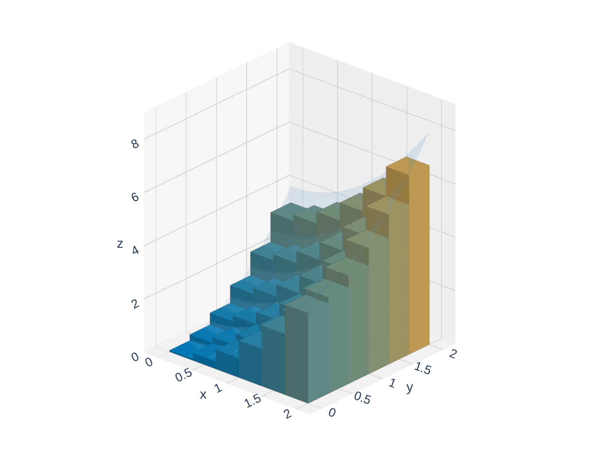
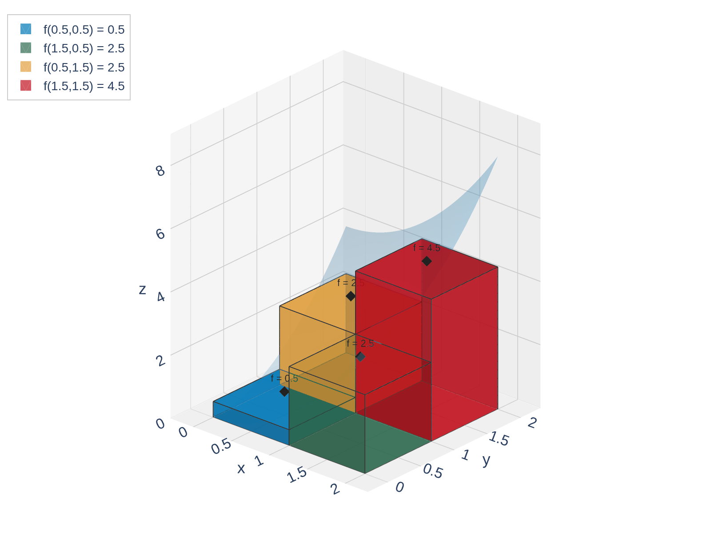
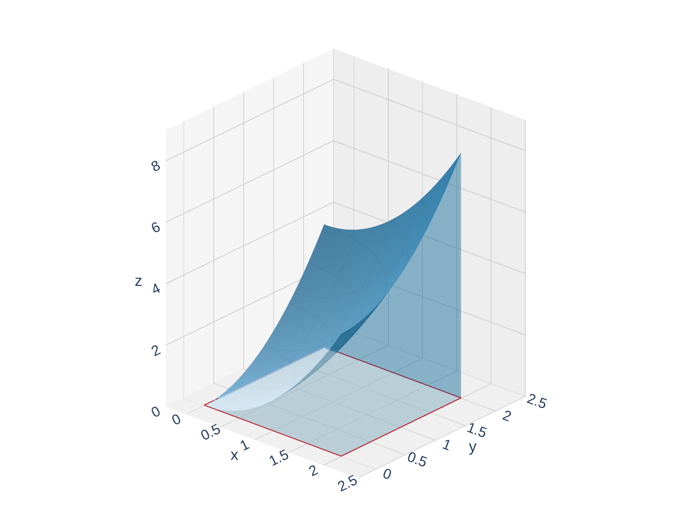
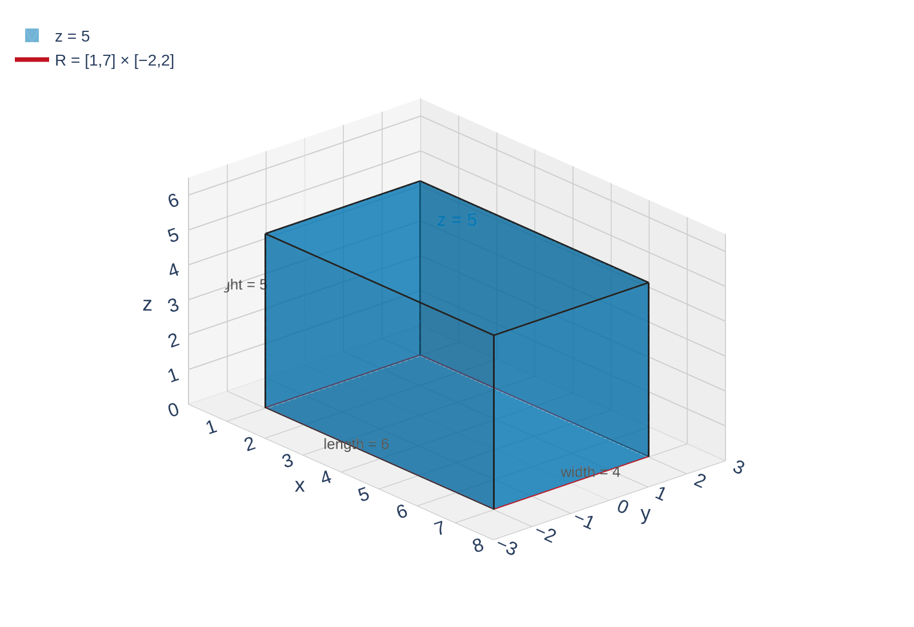
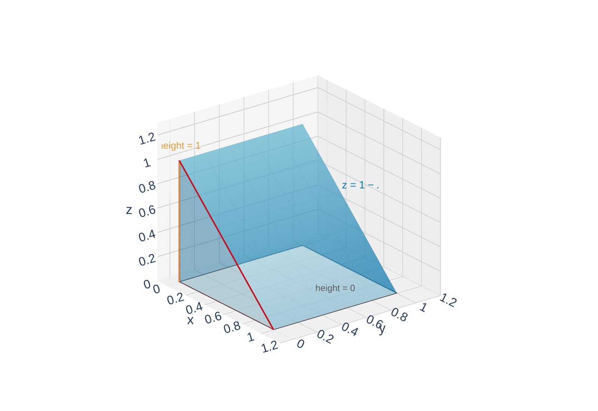

From Calc I to Calc III
Welcome to Chapter 15! We're leaving derivatives behind and entering the world of multiple integration.
In Calculus I, the area under a curve \(y = f(x)\) over \([a,b]\) is the limit of Riemann sums:
\[\int_a^b f(x)\,dx = \lim_{n \to \infty} \sum_{i=1}^{n} f(x_i^*)\,\Delta x\]
In Calculus III, the volume under a surface \(z = f(x,y)\) over a rectangle \(R\) is the limit of double Riemann sums — using rectangular columns instead of rectangular strips.
Calc I: strips in 2D
![A 2D graph of y = x squared on [0,2] approximated by 8 midpoint Riemann sum strips shaded in blue. The red curve lies above the strips. This is the Calc I picture: area under a curve via rectangular strips.](figures/riemann_strips_1d.png)
Calc III: columns in 3D

Same idea, one dimension higher: chop the region into pieces, build columns, add up volumes, take the limit.
Building a Double Riemann Sum
Suppose \(f(x,y) \geq 0\) is defined on the rectangle \(R = [a,b] \times [c,d]\).
Step 1: Partition the rectangle.
- Divide \([a,b]\) into \(m\) equal subintervals of width \(\Delta x = \frac{b-a}{m}\)
- Divide \([c,d]\) into \(n\) equal subintervals of width \(\Delta y = \frac{d-c}{n}\)
- This creates \(m \times n\) subrectangles, each with area \(\Delta A = \Delta x \cdot \Delta y\)
![A top-down diagram of the rectangle [0,2] by [0,2] divided into a 4 by 4 grid of 16 equal subrectangles shaded light blue. One subrectangle R_ij is highlighted in amber. Double-headed arrows along the bottom and left edges are labeled delta-x and delta-y.](figures/rectangle_partition.png)
Step 2: Choose sample points.
In each subrectangle \(R_{ij}\), choose a sample point \((x_{ij}^*, y_{ij}^*)\). Common choices: corners, midpoints, or random points.

Step 3: Build columns and add.
Each column has base area \(\Delta A\) and height \(f(x_{ij}^*, y_{ij}^*)\), so its volume is \(f(x_{ij}^*, y_{ij}^*)\,\Delta A\). The total volume is approximately:
\[V \approx \sum_{i=1}^{m}\sum_{j=1}^{n} f(x_{ij}^*, y_{ij}^*)\,\Delta A\]

The Double Integral
As we use more and more subrectangles (\(m, n \to \infty\)), the approximation gets better and better. In the limit, we get the exact volume.
\(m = n = 2\): rough approximation
\(m, n \to \infty\): exact volume

The double integral of \(f\) over the rectangle \(R\) is:
\[\iint_R f(x,y)\,dA = \lim_{m,n \to \infty} \sum_{i=1}^{m}\sum_{j=1}^{n} f(x_{ij}^*, y_{ij}^*)\,\Delta A\]
provided this limit exists (in which case we say \(f\) is integrable over \(R\)).
Good news: If \(f\) is continuous on \(R\) (or bounded with discontinuities only on a ``small'' set), then \(f\) is integrable over \(R\). All the functions we'll encounter are integrable.
Geometric interpretation:
- When \(f(x,y) \geq 0\): \(\iint_R f\,dA\) = volume under the surface and above \(R\)
- When \(f\) takes both signs: \(\iint_R f\,dA\) = (volume above \(R\)) \(-\) (volume below \(R\))
The double integral generalizes the single integral: \(\int f(x)\,dx\) gives area under a curve; \(\iint f(x,y)\,dA\) gives volume under a surface.
Example 1: Midpoint Approximation
Let \(f(x,y) = x^2 + y^2\) and \(R = [0,2] \times [0,2]\). Approximate the volume under \(f\) over \(R\) by dividing \(R\) into a \(2 \times 2\) grid and using midpoints.
Draw the \(2 \times 2\) grid on \([0,2] \times [0,2]\). Find \(\Delta A\). Mark the midpoints. Evaluate \(f\) at each.
Compute the heights. Evaluate \(f\) at each midpoint:
\[f\!\left(\tfrac{1}{2}, \tfrac{1}{2}\right) = \tfrac{1}{4} + \tfrac{1}{4} = \tfrac{1}{2}, \qquad f\!\left(\tfrac{3}{2}, \tfrac{1}{2}\right) = \tfrac{9}{4} + \tfrac{1}{4} = \tfrac{5}{2}\]
\[f\!\left(\tfrac{1}{2}, \tfrac{3}{2}\right) = \tfrac{1}{4} + \tfrac{9}{4} = \tfrac{5}{2}, \qquad f\!\left(\tfrac{3}{2}, \tfrac{3}{2}\right) = \tfrac{9}{4} + \tfrac{9}{4} = \tfrac{9}{2}\]
Each rectangle is the base of a column!
Add up the boxes. Each column has volume \(= \text{height} \times \Delta A\):
\[\text{Total} \approx \left(\tfrac{1}{2} + \tfrac{5}{2} + \tfrac{5}{2} + \tfrac{9}{2}\right)(1) = \frac{20}{2} = 10\]
\(\displaystyle\iint_R (x^2 + y^2)\,dA \approx 10\). The exact value is \(\frac{32}{3} \approx 10.67\), so our 4-box estimate is pretty close!
Your Turn: Midpoint Riemann Sum
Let \(f(x,y) = xy\) and \(R = [0,1] \times [0,1]\). Approximate the volume under \(f\) over \(R\) using a \(2 \times 2\) grid and midpoints.
Draw the \(2 \times 2\) grid on \([0,1] \times [0,1]\). Find \(\Delta A\). Mark the midpoints. Evaluate \(f\) at each.
![The unit square [0,1] by [0,1] divided into a 2 by 2 grid of four equal subrectangles each with area 1/4. A red dot marks each midpoint at (1/4,1/4), (3/4,1/4), (1/4,3/4), (3/4,3/4), with the f(x,y)=xy values 1/16, 3/16, 3/16, 9/16 labeled in amber.](figures/quick_check_2x2.png)
Grid and \(\Delta A\): Each square is \(\frac{1}{2} \times \frac{1}{2}\), so \(\Delta A = \frac{1}{4}\).
Midpoints: \(\left(\frac{1}{4}, \frac{1}{4}\right)\), \(\left(\frac{3}{4}, \frac{1}{4}\right)\), \(\left(\frac{1}{4}, \frac{3}{4}\right)\), \(\left(\frac{3}{4}, \frac{3}{4}\right)\)
Heights: Evaluate \(f(x,y) = xy\) at each midpoint:
\[f = \tfrac{1}{4} \cdot \tfrac{1}{4} = \tfrac{1}{16}, \quad f = \tfrac{3}{4} \cdot \tfrac{1}{4} = \tfrac{3}{16}, \quad f = \tfrac{1}{4} \cdot \tfrac{3}{4} = \tfrac{3}{16}, \quad f = \tfrac{3}{4} \cdot \tfrac{3}{4} = \tfrac{9}{16}\]
Add up the boxes:
\[\left(\tfrac{1}{16} + \tfrac{3}{16} + \tfrac{3}{16} + \tfrac{9}{16}\right) \cdot \tfrac{1}{4} = 1 \cdot \tfrac{1}{4} = \tfrac{1}{4}\]
\(\displaystyle\iint_R xy\,dA \approx \frac{1}{4}\). The exact answer is also \(\frac{1}{4}\) — the midpoint rule happened to be exact here!
Geometric Interpretation of the Double Integral
When \(f(x,y) \geq 0\), the double integral \(\iint_R f\,dA\) gives the volume of the solid between the surface \(z = f(x,y)\) and the rectangle \(R\) in the \(xy\)-plane.
This means we can evaluate some double integrals by recognizing the solid as a familiar geometric shape.

Constant function: \(z = c\) over \(R\) is a box.
Volume \(= \text{length} \times \text{width} \times \text{height}\)
![A wedge-shaped solid (triangular prism) over the rectangle R = [3,6] times [1,5]. The surface z = x forms a ramp that rises linearly from x = 3 (height 3) to x = 6 (height 6). The cross-section in the xz-plane is a trapezoid.](figures/ramp_wedge.png "Click to interact")
Linear function: \(z = x\) over \(R\) is a ramp/wedge.
Volume \(= \text{cross-sectional area} \times \text{depth}\)
Before reaching for computation, ask: can I see the shape? If the solid is a box, wedge, cylinder, cone, or hemisphere, use the geometric formula!
Example 2: Volume of a Box
Evaluate \(\displaystyle\iint_R 5\,dA\) where \(R = \{(x,y) \mid 1 \leq x \leq 7,\; -2 \leq y \leq 2\}\).
The surface \(z = 5\) is a horizontal plane. What solid sits between this plane and the rectangle \(R\)?
Identify the shape: The surface \(z = 5\) is a flat plane at height \(5\). The solid between \(z = 0\) and \(z = 5\) over \(R\) is a rectangular box.
Compute the dimensions:
\[\text{length} = 7 - 1 = 6, \qquad \text{width} = 2 - (-2) = 4, \qquad \text{height} = 5\]
Volume:
\[\iint_R 5\,dA = 6 \times 4 \times 5 = 120\]
When the integrand is a constant \(c\), \(\displaystyle\iint_R c\,dA = c \cdot \text{Area}(R)\)
Your Turn: Geometric Interpretation
Without computing any integrals, what is \(\displaystyle\iint_R (1-x)\,dA\) where \(R = [0,1] \times [0,1]\)?
Hint: Sketch \(z = 1 - x\) over the unit square. What shape do you see?
The surface \(z = 1-x\) is a plane. At \(x = 0\) the height is \(1\); at \(x = 1\) the height is \(0\). What solid is this?
The surface \(z = 1 - x\) is a ramp (plane) that slopes from height \(1\) at \(x = 0\) down to height \(0\) at \(x = 1\).
The solid is a triangular prism (wedge) with:
- Triangular cross-section: base \(= 1\), height \(= 1\), area \(= \frac{1}{2}\)
- Depth (in the \(y\)-direction) \(= 1\)

\[\iint_R (1-x)\,dA = \underbrace{\frac{1}{2}}_{\text{cross-section}} \cdot \underbrace{1}_{\text{depth}} = \frac{1}{2}\]
A linear function over a rectangle always produces a shape you can compute geometrically — no integral formulas needed!
Properties of Double Integrals
Double integrals obey the same linearity rules as single integrals.
If \(f\) and \(g\) are integrable over \(R\) and \(c\) is a constant:
- Constant multiple: \(\displaystyle\iint_R cf\,dA = c\iint_R f\,dA\)
- Sum/Difference: \(\displaystyle\iint_R (f \pm g)\,dA = \iint_R f\,dA \pm \iint_R g\,dA\)
- Comparison: If \(f(x,y) \geq g(x,y)\) for all \((x,y)\) in \(R\), then \(\displaystyle\iint_R f\,dA \geq \iint_R g\,dA\)
- Splitting: If \(R = R_1 \cup R_2\) where \(R_1\) and \(R_2\) don't overlap (except on edges), then \(\displaystyle\iint_R f\,dA = \iint_{R_1} f\,dA + \iint_{R_2} f\,dA\)

These properties follow directly from the corresponding properties of finite sums and limits. They'll be essential when we learn to compute double integrals via iterated integrals in the next section.
Linearity is your best friend: it lets you break complicated integrals into simpler pieces.
Looking Ahead: How Will We Actually Compute These?
So far, we've only evaluated double integrals by:
- Riemann sum approximations (Example 1)
- Geometric formulas for simple shapes (Example 2)
The big question: What about \(\displaystyle\iint_R e^{x+y}\,dA\) or \(\displaystyle\iint_R \sin(x^2 y)\,dA\)? We can't draw those as boxes or wedges!
Coming in Section 15.2: Fubini's Theorem tells us we can compute a double integral as two nested single integrals:
\[\iint_R f(x,y)\,dA = \int_a^b \left[\int_c^d f(x,y)\,dy\right]\,dx\]
This is called an iterated integral, and it reduces the problem to two Calc I integrals!
Today's takeaway: understand what a double integral is (limit of Riemann sums, volume under a surface). Next time: learn how to compute them efficiently.
Section 15.1 Summary
Partition \(R\) into subrectangles, choose sample points, sum \(\sum\sum f(x_{ij}^*, y_{ij}^*)\,\Delta A\).
\(\iint_R f(x,y)\,dA = \lim_{m,n \to \infty} \sum\sum f(x_{ij}^*, y_{ij}^*)\,\Delta A\). Exists when \(f\) is continuous on \(R\).
\(f \geq 0\): volume under the surface. Mixed signs: volume above minus volume below.
Constant \(\to\) box (\(c \cdot \text{area}\)). Linear \(\to\) wedge/ramp (use cross-section \(\times\) depth).
Linearity (constant multiple, sum/difference), comparison, splitting over subregions.
Big idea: A double integral is the natural extension of a single integral to functions of two variables. Volume under a surface = limit of column sums, just as area under a curve = limit of strip sums.
Homework
Section 15.1
1-11 odd, 17, 19, 21, 25, 29, 31, 33, 45, 55